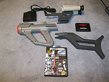
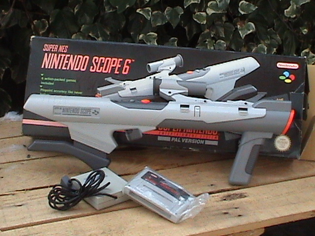
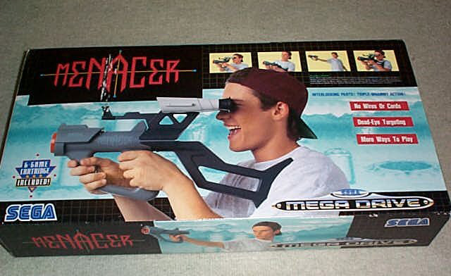
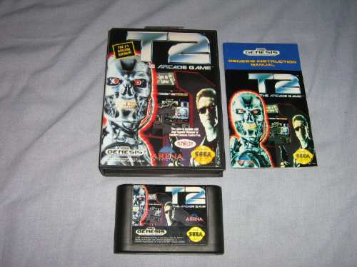

Mega Drive - Menacer
 Na
geração 8-bits encontramos diversos joguinhos que fazem
uso de uma pistola ao invés do joystick. O Nintendinho é
que estreou com sucesso essa moda, com uma enxurrada de games simples
porém viciantes e divertidos, que renderam bons lucros à
Big N assim como muita alegria para a mulecada. O Master System
tão logo apareceu já veio com a Light Phaser para fazer
concorrência ao NES, e jogos muito bons fizeram uso desse
acessório no console.
Na
geração 8-bits encontramos diversos joguinhos que fazem
uso de uma pistola ao invés do joystick. O Nintendinho é
que estreou com sucesso essa moda, com uma enxurrada de games simples
porém viciantes e divertidos, que renderam bons lucros à
Big N assim como muita alegria para a mulecada. O Master System
tão logo apareceu já veio com a Light Phaser para fazer
concorrência ao NES, e jogos muito bons fizeram uso desse
acessório no console.
Na geração seguinte, formada por consoles de 16 bits e
muito mais capazes que os da geração anterior, houve a
tentativa de evoluir os antigos joguinhos de pistola, então a
Nintendo lançou a Super Scoope, uma baita duma bazuca! Como a
Sega não era boba naqueles tempos, tratou logo de inventar algo
do tipo para o Mega, mas que seguisse a linha radical desse console de
16-bits, foi aí então que nasceu a Menacer, a bazuca-pistola-rifle-de-dois-olhos do Mega Drive .
.
|  |  |
| Menacer e Super Sope | |
A Menacer é um conjunto de 4 peças, três delas formam o corpo da pistola (vamos chama-la assim pra facilitar ),
que não precisam estar todos encaixados para ela funcionar. A
quarta parte é um receptor que é conectado ao console,
já que não há fio algum que ligue a pistola
diretamente no video game (sim, ela é sem fio, wireless, sentiu
a firmeza do negocio?). A alimentação dela vem de 6
pilhas comuns, que tendem a durar um bocado, ainda mais se forem do
tipo alcalinas.
),
que não precisam estar todos encaixados para ela funcionar. A
quarta parte é um receptor que é conectado ao console,
já que não há fio algum que ligue a pistola
diretamente no video game (sim, ela é sem fio, wireless, sentiu
a firmeza do negocio?). A alimentação dela vem de 6
pilhas comuns, que tendem a durar um bocado, ainda mais se forem do
tipo alcalinas.
Dentro da caixa original da Menacer, vinha tambem um cartucho com 6 jogos (Pest Control, Space Station Defender, Whack Ball, Front Line, Rockman's Zone, e Ready, Aim Tomatoes!). Fora esse cartucho, somente outros dois outros cartuchos do Mega fizeram uso da Menacer, que são Body Count e o excelente T2 - The arcade game (um joguinho dificil pacas do Exterminador do Futuro, viciante!). De resto, somente alguns jogos do Sega CD e do 32-X é que deram alguma utilidade à esse acessório.
De uma maneira geral, a Menacer tinha
tudo para se dar bem, era prática e tinha um visual atraente (ao
contrário da bazuca do SNES ...)
só o preço é que era salgado, algo por volta de
$100 dólares na época (que era uma grana de lascar a
carteira de qualquer um!). De todo modo, a Menacer, assim como a Super
Scope, morreram por um único e simples motivo: falta de jogos.
É meus caros, nem tudo que deu certo na geração
anterior, teve uma vida prospera na geração
16-bits.
...)
só o preço é que era salgado, algo por volta de
$100 dólares na época (que era uma grana de lascar a
carteira de qualquer um!). De todo modo, a Menacer, assim como a Super
Scope, morreram por um único e simples motivo: falta de jogos.
É meus caros, nem tudo que deu certo na geração
anterior, teve uma vida prospera na geração
16-bits.
|
 |
| T2 - The arcade game. Um dos (poucos, mas bons) jogos lançados para uso com a Menacer |
Acesse o Trombone e comente sobre essa matéria!


O jogo Sonic The Hedgehog marcou o inicio de um dos personagens mais queridos dos jogos eletrônicos. Uma curiosidade que vejo pouco comentada, é que este jogo de criação de Yuji Naka e sua equipe chamada Sonic Team, tem uma espécie de passagem de tempo na aventura